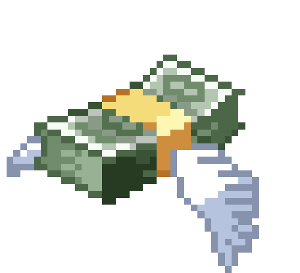

El mundo Pokemon esta dividida en 10 Regiones principales.
En estas 10 Regiones, hay otras sub regiones pero no son tan importantes
ni tienen tanto contenido como para hablar de ellas.
Las 10 Regiones son: Kanto, Johto, Hoenn, Islas Sete, Sinnoh, Teselia, Kalos, Alola, Galar y Paldea
Aca hay una imagen sobre las primeras 9 Regiones, Paldea no está porque es muy reciente:
Los puntos rojos representan las Ciudades principales,
mientras que los puntos azules demuestran los pueblitos y puertos.
En el mundo Pokemon, cada region tiene una cultura y lengua unica,
como por ejemplo, en Kalos se habla Frances.
Sin embargo, la lengua global es el Japones.
En todas las Regiones se habla el Japones, esto es para que
no haya un choque cultural tan fuerte, y se puedan comunicar
cuando se visiten otras regiones.
En el mundo Pokemon, a los ciudadanos que tengan
capturado un Pokemon, se les llama Entrenadores.
Un Entrenador es alguien que convive con su Pokemon,
ya sea como mascota, amigo o compañero de trabajo.
Hay entrenadores que usan sus Pokemon para cocinar,
otros para el trabajo y otros para participar en combates Pokemon.

La economia en el mundo Pokemon es más simple
que en el mundo real.
Existe una unica moneda, llamada Pokedollar, y se usa en todas las regiones.
Si bien las personas son las que trabajan,
los pokemon tambien ayudan y reciben una paga,
en su caso es comida.
